2026.05.04
TOUR
10月巡游开放预约。品秋味、享工作与生活的平衡。
备受好评的秋季之旅再度归来，专为数字游民量身定制。
查看详情 →Now Loading...
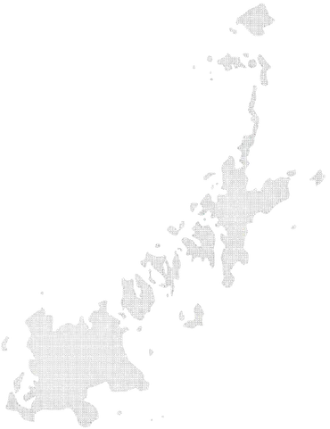
Retreat Islands for Digital Nomads

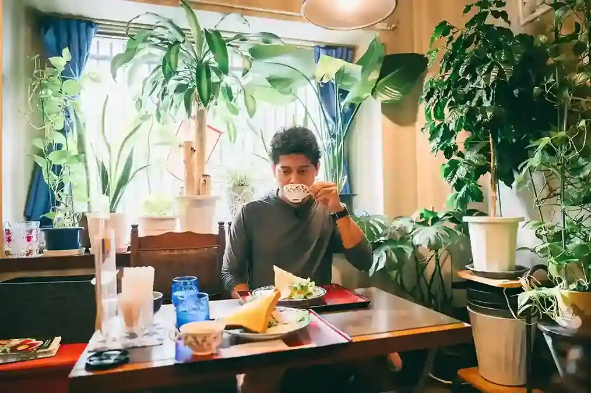
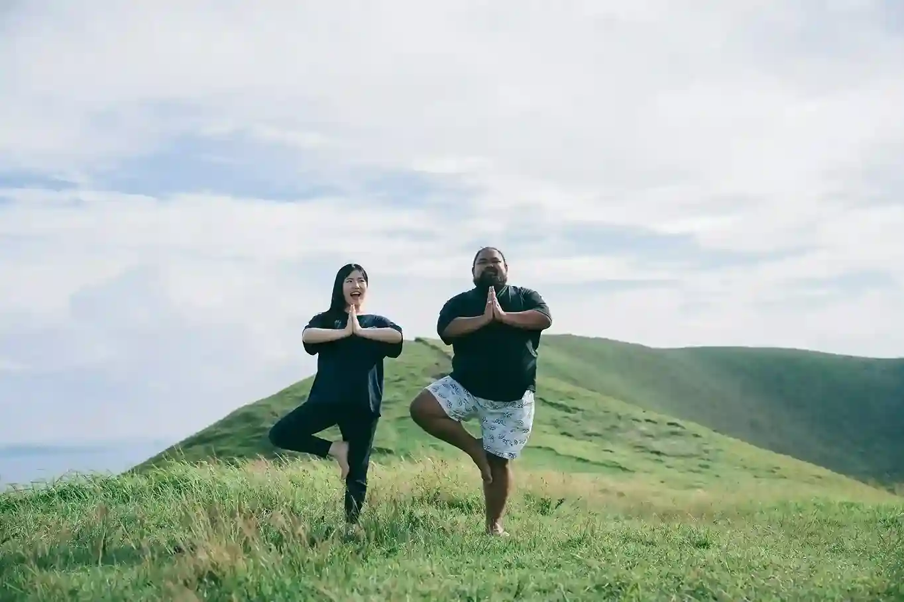
浮于日本西端的五岛列岛，是一个远离城市喧嚣、为心灵带来留白的神奇之岛。
被温暖的人们、广袤的自然、以及海山的恩惠所环绕，悠然的时光在这里缓缓流淌。
浮潜、徒步、钓鱼——在亲近自然中，找回自己的地方。
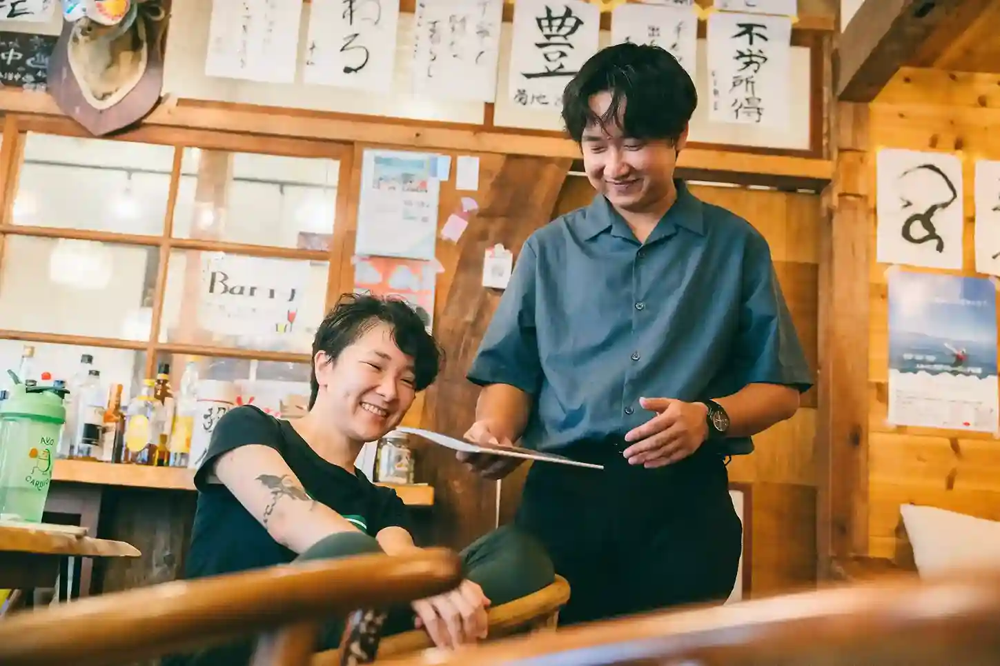
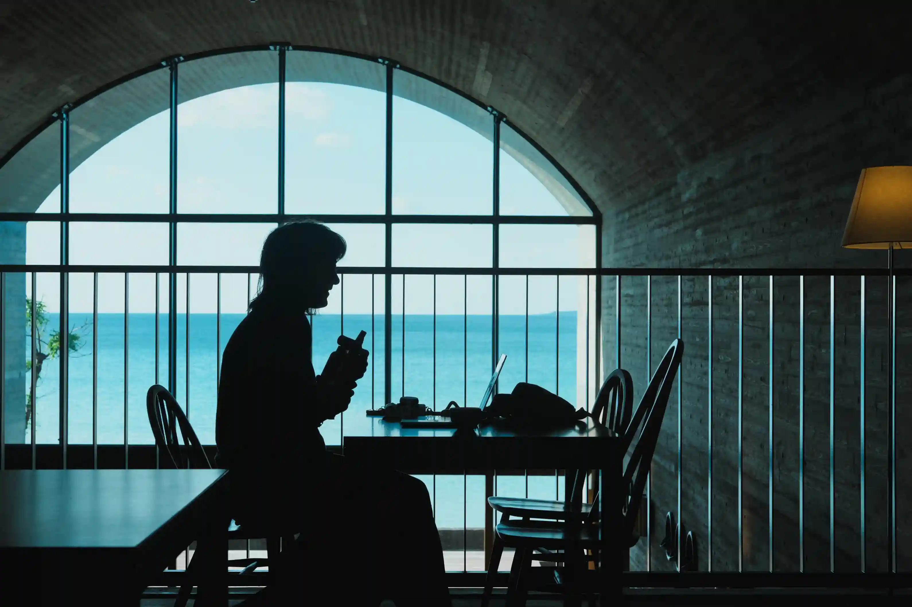
A day in Goto
起床
在共居空间迎来清晨。呼吸着岛上的空气，开始新的一天。
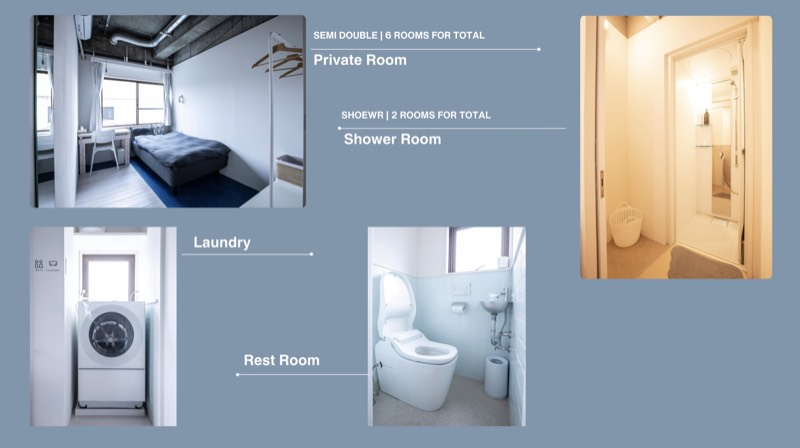
在共享办公空间工作
在配备高速Wi-Fi的共享办公室开始上午的工作。
在附近的咖啡馆享用午餐
通过社区口耳相传，发现只有本地人才知道的午餐好去处。
在海景咖啡馆工作（Colorit等）
移步至面朝大海的咖啡馆，在绝美风景中度过下午的工作时光。

黄昏垂钓
工作结束后前往防波堤或礁石，在夕阳中享受垂钓的至福时光。

在共居空间烹饪今日钓获·共享晚餐
与伙伴们一起烹饪自己钓到的鱼，围坐在岛上特有的餐桌旁。

在私人房间或会议室工作
寂静的夜晚，在私人房间或会议室中迎来高效专注的黄金时段。
就寝
伴随着潮声，沉入深深的睡眠。
起床
无需匆忙的早晨。在岛风和阳光中自然醒来。
与社区管理员体验农耕
与当地农家一起干农活。触摸泥土，了解食物的源头。

午餐（五岛乌冬面）
来一碗Q弹的五岛乌冬面，岛上的定番灵魂美食。

在高滨海滩休憩
在以高透明度著称的高滨海水浴场悠闲地享受大海。
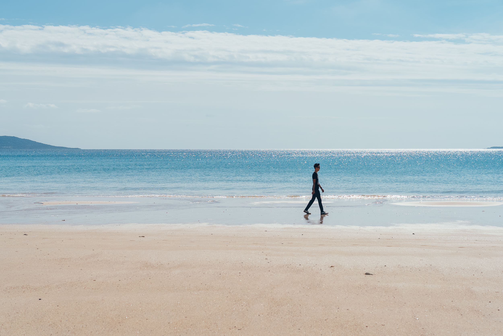
荒川温泉放松＋附近咖啡馆工作
在源泉温泉中消除疲劳，再移步海边咖啡馆继续工作。
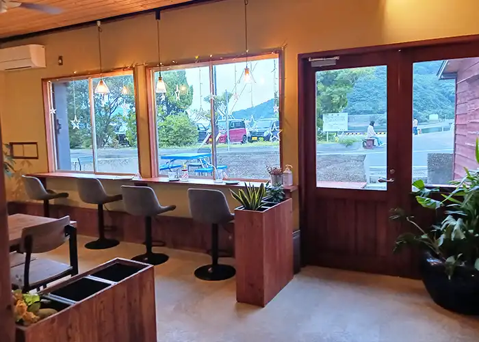
驾车前往大瀬崎灯台观赏日落
矗立在断崖上的白色灯塔，与沉入东海的落日。令人屏息的绝景。

在当地人家中烧烤
受岛上社区之邀，与当地人围坐在一起共享特别的夜晚。

在鬼岳观星
远离光污染的五岛夜空堪比天象馆。在鬼岳草原仰望满天繁星。

就寝
沉浸在充实一天的余韵中，悄然入睡。
五岛列岛除了拥有传统的神道和佛教文化，还曾是逃避迫害的潜伏基督徒移居之地。这是一个跨越文化和宗教差异、人们持续交融的地方。
正因如此而诞生的独特文化与历史，加上原始的自然，营造出日本其他任何地方都无法比拟的特别氛围。
如今，被其魅力所吸引，越来越多的人选择离开城市，一边远程工作，一边在五岛生活。
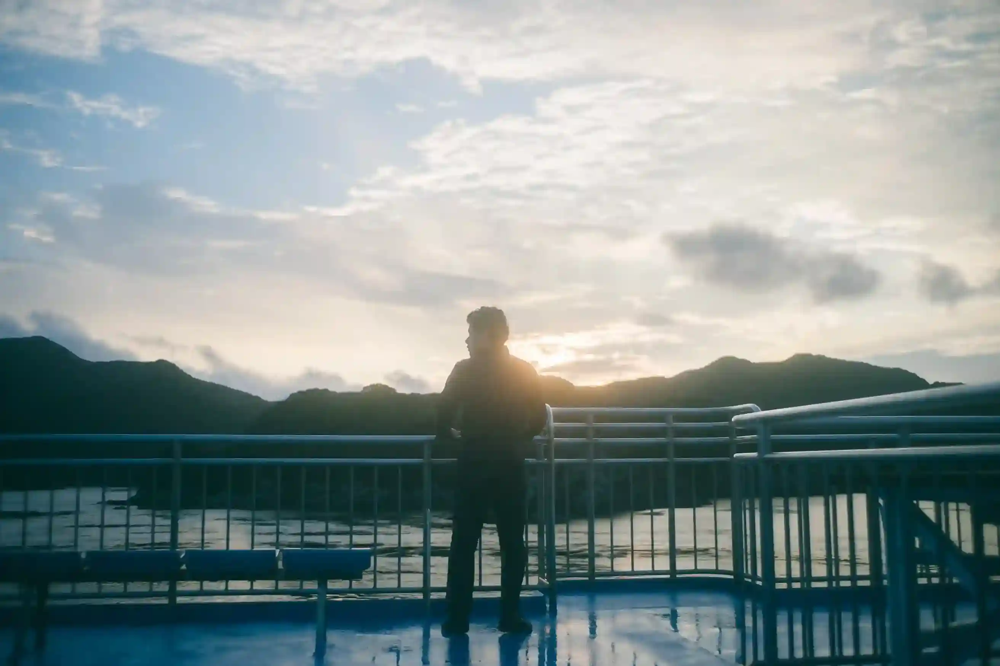
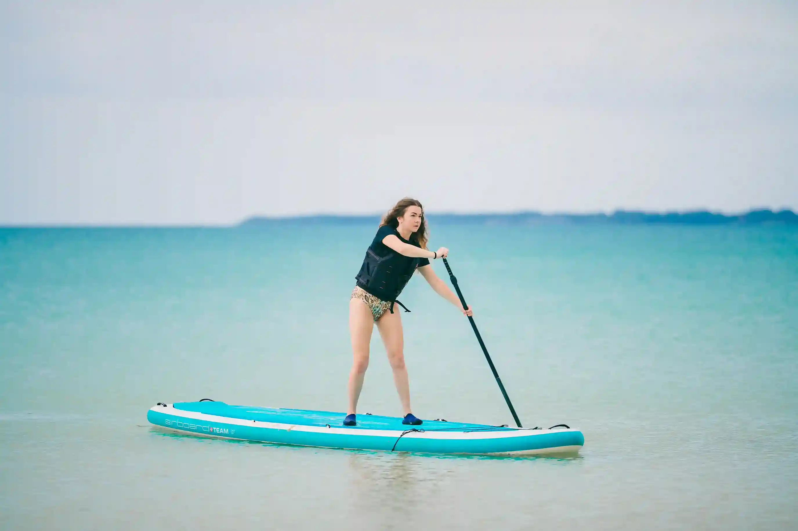
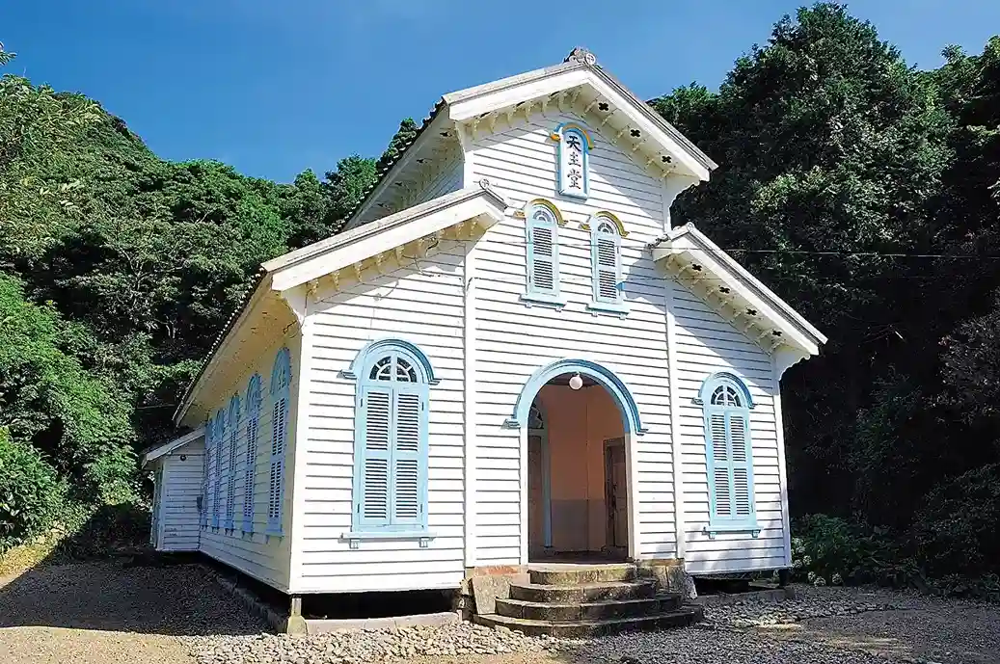
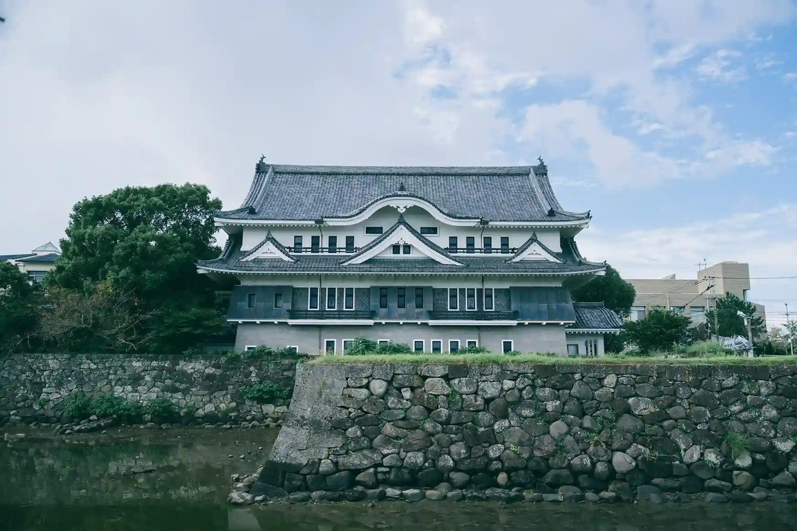
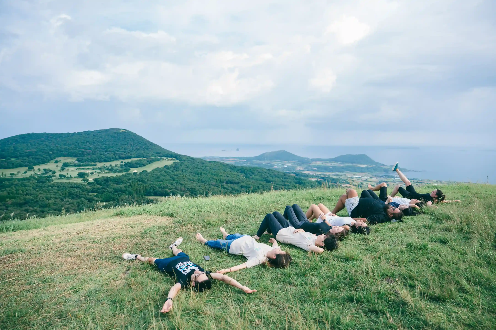
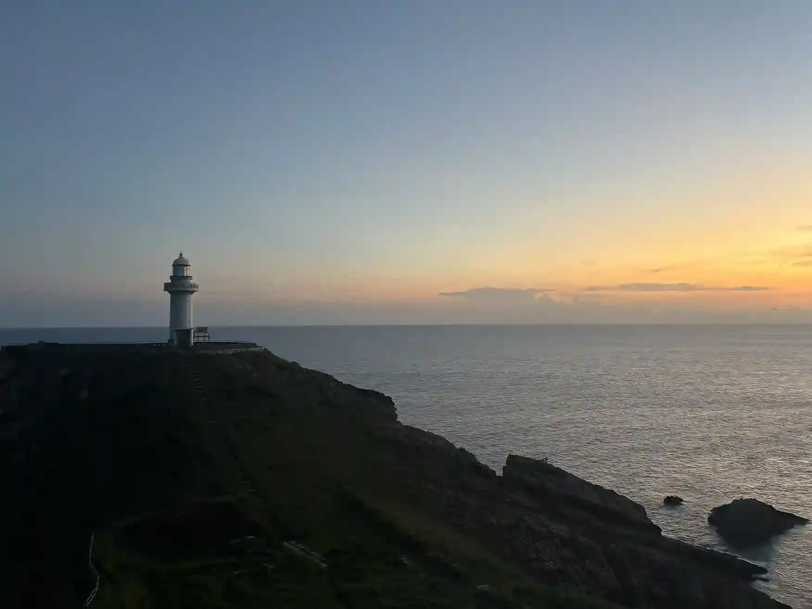
日程、地图、岛上生活的点滴——
你需要的一切都在这里。
Discord社区
可从日本各大城市前往。从长崎和福冈有飞机和渡轮可达。
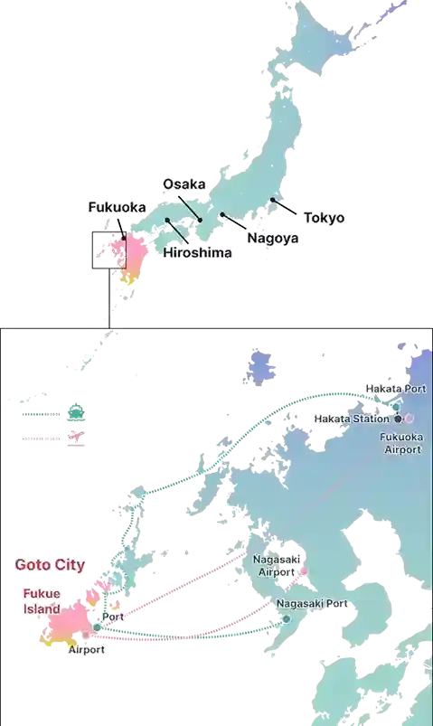
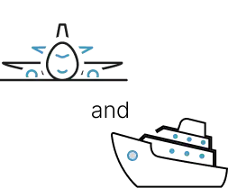
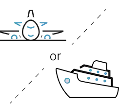
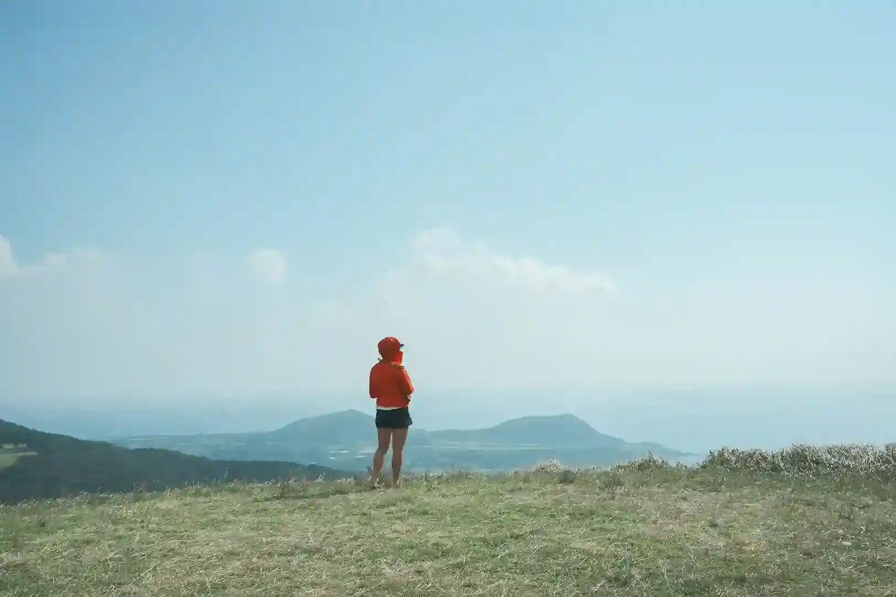